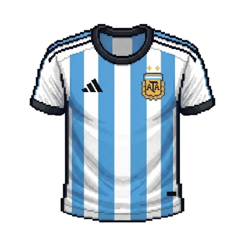
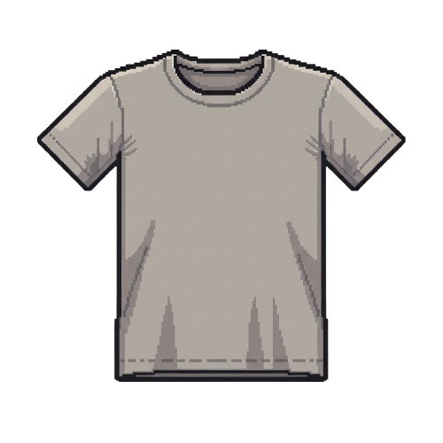
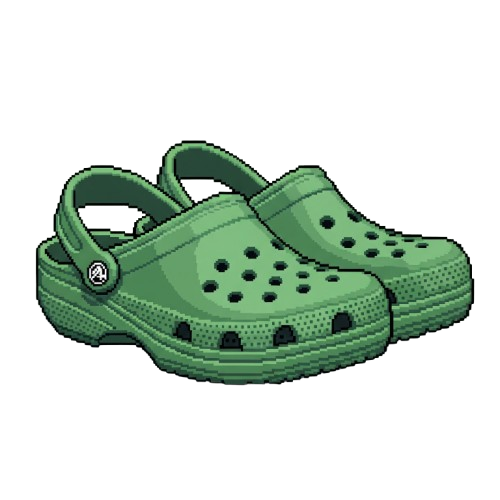
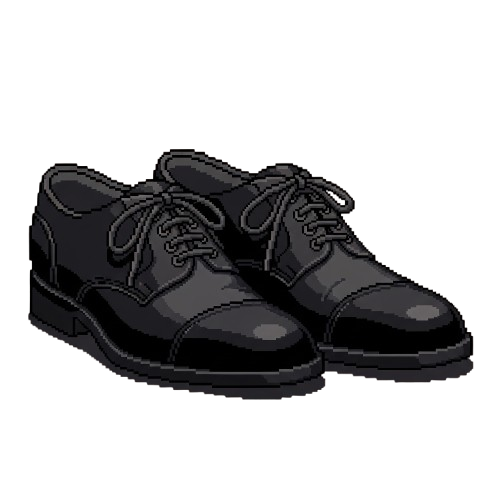

| Prenda | Norma |
|---|---|
|  | No se permiten los mensajes o las alusiones deportivas en la indumentaria, por tanto se consideran inadecuadas para el ámbito universitario las camisetas deportivas fuera del gimnasio. |
|  | Se considera adecuado para el ámbito universitario cualquier remera, chomba, blusa o camisa en buen estado y apropiado para espacios académicos. |
|  | No se permite el uso de calzado de playa, crocs o similares, ya que se considera inadecuado para el ámbito universitario. |
|  | Se considera adecuado para el ámbito universitario el calzado cerrado, sin plataformas excesivas. |
| No se permiten accesorios que cubran el rostro (gorras, capuchas, etc.) por incumplir las normas de seguridad académica vigentes. |